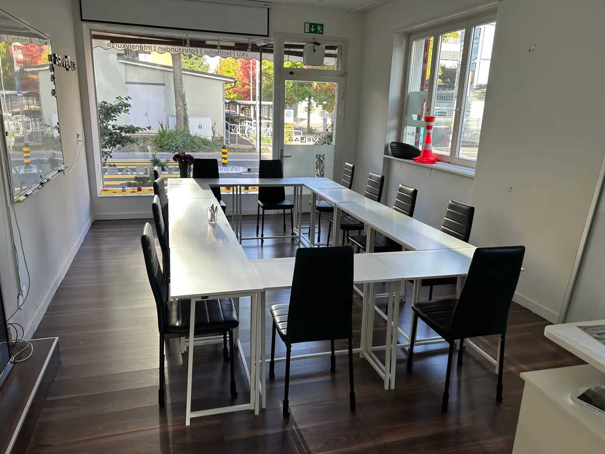

Gesetzlich vorgeschrieben
Ohne VKU keine Prüfung.
Wer den Führerausweis der Kategorien A1, A, B1 oder B erwerben will, muss den Verkehrskundeunterricht besuchen. Acht Stunden, zwei Abende, eine Teilnahmebestätigung.
Eintrag 00 · Deine Pflicht
unvollständig
Welche Kategorie?
Prüfung wann?
Beantworte beide Felder — der Eintrag wird ausgefüllt.
ohne BefundZur Anmeldung CHF 230 · Storno bis 48 Std. vor Kursbeginn kostenlos

- Preis
- CHF 230
- Dauer
- 8 Std.
- Form
- 2 Abende
- Zeit
- 18:00–22:00
- Ort
- Industriestr. 50
- Bahnhof
- 9 Min zu Fuss
Alle Angaben verbindlich im Buchungssystem. Grundlage: Verordnung des UVEK über den Verkehrskundeunterricht.